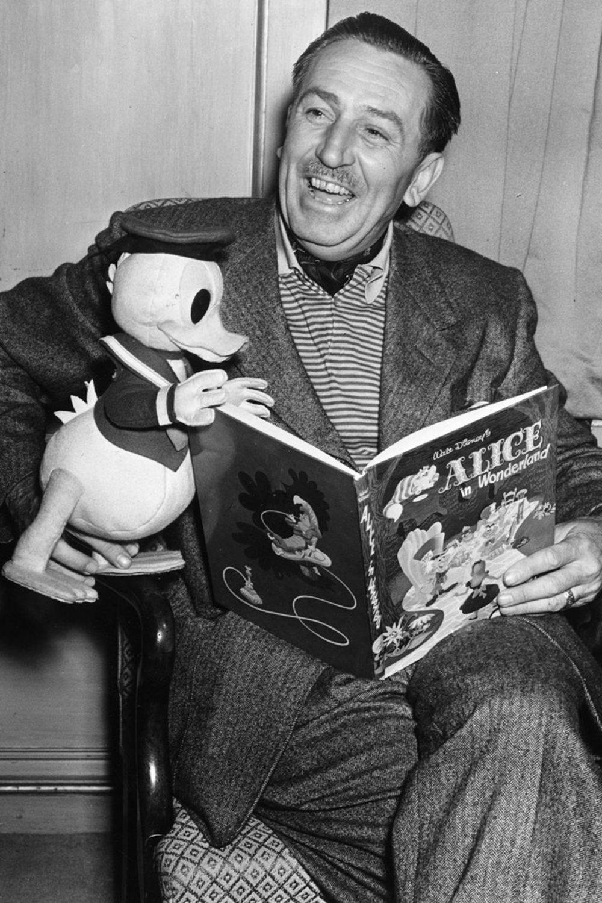
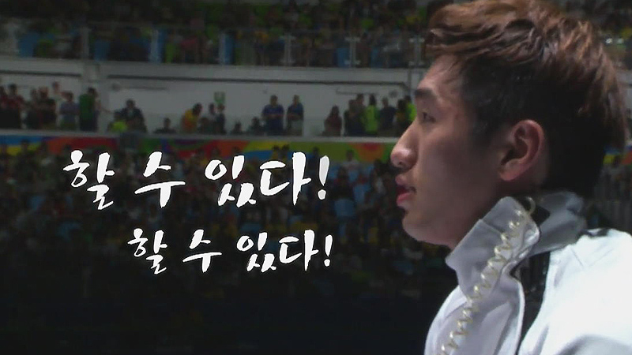

배경
- 좋은 개발자 경력을 쌓기 위해서는 실력뿐만 아니라 마음가짐이 동반되어야 합니다. 개발자 커리어 관리는 장거리 마라톤입니다.
- 짧은 기간 벼락치기로 좋은 성과를 낼 순 있지만, 필연적으로 burn-out이 올 수 있습니다. 보다 롱런할수있는 개발자는 마인드를 관리해야합니다.
- 배움의 자세가 제일 중요합니다. 그러기 위해선 내가 현재 알고 있는 지식과 모르는 지식을 분리할 줄 알아야 합니다.
- 이것을 Meta 인지라 하는데 모르는 것을 탐구하여 내 것으로 만든 후 면접 뿐만 아니라 취업 후에도 회사 에서도 효율적으로 동기부여 하는 법을 알려드리겠습니다.
과정
- 지속적인 성장을 위해선 중단기적인 목표를 설정해야 합니다. 하지만, 신입 또는 주니어 단계의 개발자는 경험이 적어서 어떤 목표가 자신에게 도움이 되고 적합한지 알지 못합니다. 그래서 추천해 드리는 방식은 학교, 회사에서는 본인의 주어진 역할에 최선을 다하고 그 외에도 개발 단체, 해커톤, 개발자 컨퍼런스, 토이프로젝트, 창업동아리, 멘토링 등등 다양한 경험을 정기적으로 참석하여 장기적 커리어에 어떤 부분이 적합하고 도움이 될지 경험을 쌓으시는 것을 추천해 드립니다.
- 단기 또는 중장기적인 목표를 세웠다면, 예시로 나는 3개월 안에 정보처리기사를 합격할 거야 or 1년 안에 서비스 대기업으로 이직할 거야 or 내가 만든 서비스로 창업을 도전해서 사회에 이바지할 거야 등등 계획을 먼저 세우셔야 합니다. 그다음으로는 실행해야 합니다. 저 포함해 많은 분이 막상 계획은 많이 세우지만, 정해진 계획을 달성하는 비율이 높지 않습니다. 저는 이러한 원인이 충분한 동기부여를 주지 않았기 때문이라 생각합니다. 이글의 목적이기도 한 동기부여를 어떻게 주어야 하나에다 저 또한 많은 시간 동안 고민했습니다.
- 제가 내린 결론은 "동기부여를 위한 실패를 하자"입니다. 저는 현재 N사에서 개발자로 이직하기 전에 무수히 많은 면접 실패, 코딩테스트 탈락, 서류 탈락을 하였습니다. 실패하는 순간 드는 생각은 나는 여기까지인가 봐 라고 나약할 수 있지만, 나의 부족한 점이 무엇인지 객관적으로 생각해 봐야 합니다. 완벽한 실패는 성공으로 가기 위한 디딤돌이라고 생각합니다. 실패한 면접에서도 면접관님에게 실례가 되지 않는다면 제 어떠한 부분이 부족했는지 물어보는 것도 좋은 방법입니다. 취업/이직을 떠나서 인생을 살아가면서 동기부여는 건강을 위한 운동, 균형 잡힌 식습관, 질 좋은 수면 등과 같이 건강한 인생을 살기 위한 필수인 요건을 생각합니다. 한마디로 요약하자면 동기부여를 위한 경험 또는 실패를 많이 하자입니다! 
- 저는 이러한 경험 또는 실패들의 예시로 어렸을 때 프로게이머가 되고 싶어서 부모님의 반대에도 불구하고 집에서 가출하면서 준프로 게이머 대회에 참가한 적이 있습니다. 당시 저는 초등학교 6학년이었고 32강전에서 초등학교 2학년 테란 유저의 학생에게 패배하면서 나는 게임에 소질이 없나 라고 생각한 적이 있습니다. 하지만 이 경험은 훗날 저에게 게임 개발자의 길을 연결해 주었고, 또 현재는 서버 엔지니어로서 일을 할 수 있는 밑거름이 되었습니다. 지금은 성공을 위한 실패의 과정이라고 생각합니다.
- 또 다른 실패의 예시로는 부끄럽지만, 몇 년 전 가상화폐와 투자시장이 활발했을 때 뒤늦게 주변의 분위기에 휩쓸려 적지않은 돈을 잃은 적이 있습니다. 이때 경제에 대해 공부하게 되었고 금리가 무엇인지, 세계정세와 정치가 경제에 어떻게 영향을 미치는지 관심을 가지게 되었습니다. 무엇보다도 돈의 속성을 깨달은 것 같습니다. 제가 내린 결론은 "내가 컨트롤할 수 있는 분야에 집중하지 않으면 인간은 피폐해지고 나태해진다." 였습니다. 저는 그때부터 투자에 비중을 적게 두었고 내가 잘 알고 집중할 수 있는 프로그래밍을 불특정 다수에게 도움이 되게 글/멘토링/강의 등을 진행해 보자 생각을 하였고 현재는 구체적인 계획을 세우고 하나씩 진행 중입니다.
"성공의 비밀은 한 번 더 시도해 보는 것이다." - 토마스 에디슨
"성공은 두 번째로 실패한 것을 다시 시도하는 것이다." - 월트 디즈니

결과
- 실패와 경험은 성공을 위한 동기부여를 준다.
- 동기부여를 위한 다양한 경험(개발 단체, 해커톤, 개발자 컨퍼런스, 토이프로젝트, 창업동아리, 멘토링 등등 다양한 경험)을 하자.
- 내가 가진 지식을 불특정 다수에게 도움이 될 수 있도록 발표/공유하자.
끝으로
- 제가 감히 다른 개발자에게 이래라저래라 충고할 수는 없지만 경험 하나만은 동년 차 대비 다른 개발자보다 다양하게 많이 했다고 생각하고 있습니다. 초보가 왕초보를 알려주면 얼마 전 자신이 왕초보였던 경험을 바탕으로 더 상세히 알려주듯이 저는 주니어 단계의 개발자분들에게 도움이 될 만한 개발 관련 글/멘토링/강의 등을 지속해 작성하여 공유할 예정입니다. 제 활동이 누군가의 동기부여가 되었으면 하는 바람으로 글을 마칩니다.
- 긴 글 끝까지 읽어주셔서 감사합니다. CCOMMIT 멘토 알렉스 드림.
- CCOMMIT은 커리어 향상을 위한 1:1 개발자 멘토링 서비스를 제공합니다.
- 👉 자바 백엔드 커리큘럼 보러가기
- 이 컨텐츠는 CCOMMIT의 고유 자산으로 상업적인 목적의 복사 및 배포를 금합니다.
- Copyright © 2023 CCommit Company